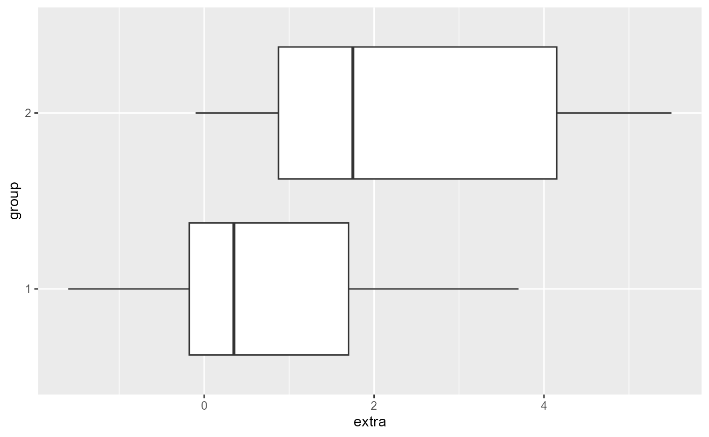

Lab 01A: Introduction to R
ENVS475: Experimental Analysis and Design
Source:vignettes/articles/lab_02_intro_to_R.Rmd
lab_02_intro_to_R.RmdWhat is R?
R is a free, open-source programming language and
software environment for statistical computing, bioinformatics,
visualization and general computing.
It is based on an ever-expanding set of analytical packages that perform specific analytical, plotting, and other programming tasks.
Why R?
R is free(!), runs on pretty much every operating
system, and has a huge user base.
The use of R also promotes open science, and
is one of the many possible solutions which are needed to remedy the replication
crisis (also sometimes called the reproducibility crisis). Indeed,
it is somewhat surprising how lax many researchers and journals are in
documenting the statistical analyses conducted in research. The use of
R scripts and judicious commenting (see below) along with
the publication of raw data will vastly improve scientific fields moving
forward.
R is far from the only programming language for working
with data. But it is the most widely used language in the fields of
ecology, and environmental sciences. If you plan to pursue a career in
any of these fields, proficiency in Ris quickly becoming a
prerequisite for many jobs.
Even if you don’t pursue a career in one of these fields, the ability to manipulate, analyze, and visualize data (otherwise known as data science) is an extremely marketable skill in many professions right now.
Additional resources and where to get help
- Cheat Sheets. In Rstudio, click
Help > Cheat Sheetsand select the appropriate one. TheRStudio IDEis a good place to start. Even after nearly a decade of usingRregularly, I often have theData transformation with dplyrandData visualization with ggplot2when I’m doing almost anything in Rstudio. You can also Google “R Cheat Sheets” to find others which are available.
We will go over the basics of using R in class but there
are many good online resources for learning R and getting
help. A few of my favorites include:
Clark Rushing’s FANR6750 website (from which much of this material is borrowed)
Data Carpentry for Biologists (also from which much of this material is borrowed)
R for Data Science Which is a completely free book online and covers many of the important aspects of working in R.
Of course, if you encounter error messages you don’t understand or
need help figuring out how to accomplish something in R,
Google is your best friend (even the most experienced R
users use Google on a daily basis, myself included). The key to finding
answers on Google is asking the right questions. Please refer to these
links for advice on formulating R-related questions:
Seeking help from Data Analysis and Visualization in R for Ecologists
Using R- the very basics
As a statistical programming tool, one thing R is very good at is
doing math. So as a starting point, let’s treat R like a
fancy calculator.
We interact with this calculator by typing numbers and operators (+,
-, *, /) into the Console window. By default, the
Console window is in the bottom left, but you can customize
the display of windows in RStudio by clicking on Tools > Global
Options > Pane Layout. For example, I like to have my
Console window in the bottom right, and the
Source window in the bottom left.
Basic expressions
Working in the Console
Let’s try it - in the Console, write the R code required
to add two plus two and then press enter:
2+2When you run the code, you should see the answer printed below the window.
Here’s some more basic expressions. Enter one line at a time into the
console and press Enter to run it.
3 / 4
10 * 2
2^3
2**3
5 + 10 / 3Play with your code a bit - try changing the number and the operators
and then run the code again. For example, try multiplying with
*, division with /, and exponents with
^ or with **. Also, play around with order of
operations and the use of () in your basic expressions.
Working With Objects
Scalars
We can run R like a calculator by typing equations
directly into the console and then printing the answer. But usually we
don’t want to just do a calculation and see the answer. Instead, we
assign values to objects. That object is then saved in
R’s memory which allows us to use that object later in our
analysis.
This might seem a bit confusing if you are new to programming so
let’s try it. The following code creates an object called
x and assigns it a value of 3:
x <- 3The operator <- is how we do assignments in
R. Whatever is to the left of <- is the
object’s name and whatever is to the right is the value. As we will see
later, objects can be much more complex than simply a number but for
now, we’ll keep it simple.
RStudio has built in shorcuts for the <- operator:
Alt + - (Windows) or Option + - (Mac).
Enter each line into the Console and press enter.
x / 4
x - 5
x / 10
(X + 50) / 7What is the value of x?
xThe calculations run, but x does not change. If we want
to store the new value we have to use the <-
operator.
x <- x*10
xRemoving objects
If you no longer want an object to be in your working environment,
you can use the rm() command. If you ran the commands
above, you should see an x object in your
Environment panel. After you confirm that you have an
x object there, run the following code:
rm(x)After running this, the x object should no longer be in
your Environment.
You try it - create an object called new_x. Instead of
assigning new_x a number, give it a calculation, for
example 25/5. What do you think the value of
new_x is?
Working with objects
In the exercise above, you may have noticed that after running the
code, R did not print anything. That is because we simply
told R to create the object (if you click on the
Environment tab, you should see x and
new_x). Now that it is stored in R’s memory,
we can do a lot of things with it. For one, we can print it to see the
value. To do that, we simply type the name of the object and run the
code:
new_x <- 25/5
new_x
#> [1] 5We can also use objects to create new objects. What do you think the following code does?
x <- 3
y <- x * 4After running it, print the new object y to see its
value. Were you right?
Using scripts instead of the console
The console is useful for doing simple tasks but as our analyses become more complicated, the console is not very efficient. What if you need to go back and change a line of code? What if you want to show your code to someone else to get help?
Instead of using the console, most of our work will be done using scripts. Scripts are special files that us to write, save, and run many lines of code. Scripts can be saved so you can work on them later or send them to collaborators.
To create a script, click
File -> New File -> R Script. You can also select the
white square with a green plus sign on it in the top left of Rstudio and
select the R Script option. Finally, if you don’t want to
use your mouse or prefer keyboard shortcuts, you can also press
Ctrl + Shift + N (windows) or Cmd + Shift + N
(mac). This new file should show up in a new window.
Shortcuts
As you gain more coding experience, you may be interested in learning more shortcuts. A full list (Windows and Mac) can be found here
First Script
We can do more complex manipulations and give our variables meaningful names. For example, perhaps we are doing surveys of nesting birds and want to get an estimate on the total weight of eggs in a nest. Let’s say we have 6 eggs in a nest, and each egg weighs an average of 14 grams. Note that the last line is the name of the object that we created. We include this line of code so that R sill tell us the value of that object.
n_eggs <- 6
egg_mass_g <- 14
egg_mass_total <- n_eggs * egg_mass_g
egg_mass_total
#> [1] 84Naming objects
It’s a good idea to give objects names that tell you something about what the object represents. Names can be as long as you want them to be but can not have spaces.
Snake Case (my preferred method)
I prefer to use snake case where an underscore
(_) is used to separate words in object names (for example:
my_data_object, filtered_data, etc).
Other options
Other options include camelCase where no spaces or
separators are used but new words are capitalized (for example:
myDataObject, filteredData, etc.), or using
. to separate words (my.data.object,
filtered.data, etc.). I strongly recommend against
using periods to separate words. In this class it most likely won’t come
up, but R often uses . in internal functions,
and as you advance in your programming abilities it may become an issue.
Better to not make bad habits from the beginning then try to break them
later.
Also remember long names require more typing so brevity is a good
rule of thumb. Names also cannot start with a number and R
is case-sensitive so, for example, Apple is
not the same as apple.
Built-in functions
- A function is a complicated expression.
- Command that returns a value
sqrt(49)
#> [1] 7- A function call is composed of two parts.
- Name of the function
- Arguments that the function requires to calculate the value it returns.
-
sqrt()is the name of the function, and49is the argument.
- We can also pass variables as the argument
weight_lb <- 0.36054
sqrt(weight_lb)
#> [1] 0.6004498- Another function that we’ll use a lot is
class() - All values and therefore all variables have a class
- lets us look at them
- Another data type is for text data, called “character”
- We write text inside of quotation makes
"hello world"
#> [1] "hello world"- We can use the
class()function to look at the “class” of different objects
- Most of what we will use in class is
numericandcharacter.
- Other classes include
logicalandfactor
class(TRUE)
#> [1] "logical"
class(FALSE)
#> [1] "logical"
char1 <- "apple"
class(char1)
#> [1] "character"
fact1 <- as.factor(char1)
class(fact1)
#> [1] "factor"-
factorclasses are special types of characters.
- They are important as grouping variables in statistical
analyses.
- We will discuss them in more detail when it is relevant later in class.
Function Arguments
- Functions can take multiple arguments.
weight_lb
#> [1] 0.36054
round(x = weight_lb, digits = 1)
#> [1] 0.4NOTE If you enter the arguments in the same order as they show up in the function you do not have to name them:
round(weight_lb, 1)
#> [1] 0.4Although you don’t have to name arguments, it’s a good idea to get in the habit of naming them. This will make you code easier to read, will help avoid mistakes that can occur when you don’t put the arguments in the correct order, and makes it easier to trouble shoot code that doesn’t do what you expect it to do.
Likewise, if you name the arguments, you can put them in different order and it will still run correctly:
round(digits = 1, x = weight_lb)
#> [1] 0.4Although you don’t have to name arguments, it’s a good idea to get in the habit of naming them. This will make you code easier to read, will help avoid mistakes that can occur when you don’t put the arguments in the correct order, and makes it easier to trouble shoot code that doesn’t do what you expect it to do.
You try it - modify the code above to round weight_lb to
the 3rd decimal point.
- Functions return values, so as with other values and expressions, if we don’t save the output of a function then there is no way to access it later
- It is common to forget this when dealing with functions and expect the function to have changed the value of the variable
- But looking at
weight_lbwe see that it hasn’t been rounded
weight_lb
#> [1] 0.36054- To save the output of a function we assign it to a variable.
weight_rounded <- round(weight_lb, digits = 1)
weight_rounded
#> [1] 0.4Commenting your code
R will ignore any code that follows a #.
This is very useful for making your code more readable for both
yourself and others. Use comments to remind yourself what a newly
created object is, to explain what a line of code does, to leave
yourself a reminder for later, etc. For example, let’s say you are
working with mark-recapture data and you have the following code:
n1 <- 44
n2 <- 32
m2 <- 15When you entered the code, you probably knew what each object name meant. But if you come back to it six months from now you might not have any idea what’s going on.
This is a great example of when to use comments to define what each object represents:
n1 <- 44 # Number of individuals captured on first occasion
n2 <- 32 # Number of individuals captured on second occasion
m2 <- 15 # Number of previously marked individuals captured on second occasionNotice that when you run this code, R ignores the
comments.
You can also put a commented line above the code you want to comment. This is my preferred method, and works better if you need a long comment.
If you need to put in a longer comment, you will need to put a
# in front of every line. For example (don’t worry about
the code for now, just observe the comments):
# load the pre-built data set in R called "CO2"
data(CO2)
# what are the names of the columns?
names(CO2)
#> [1] "Plant" "Type" "Treatment" "conc" "uptake"
# we are only interested in the "chilled" treatment group
# filter out this group and save in a new object for
# further analysis
# also switching to lower case for easier typing
co2_chilled <- CO2[CO2$Treatment == "chilled",]
# what is the average uptake of the chilled treatment?
mean(co2_chilled$uptake)
#> [1] 23.78333Running lines of code in your script
You run individual lines of code in the script by putting your cursor
on that line and pressing Ctrl+Enter (windows) or
Cmd+Return (mac). When you do this, your cursor
automatically moves to the next line. The line-by-line method is
preferred when you are working out code or trying to figure out
sections, problems, etc.
You can also run the entire script by selecting “source” at the top right of the script window (recommend selecting the down arrow and choosing “source with echo”).
Likewise, you can run the entire script with echo with the shortcut
Ctrl+Shift+Enter (windows) or Cmd+Shift+Return
(mac).
It is recommended that you restart your R session and
source your script before you submit your homework.
Vectors
So far, we have only been working with objects that store a single
number (called scalars in programming jargon). However,
often it is more convenient to store a string of numbers as a single
object. In R, these strings are called vectors and
they are usually created by enclosing the string between c(
and ).
c() is for “concatenate” which means link things
together in a chain or series:
vec1 <- c(3, 5, 2)
vec1
#> [1] 3 5 2You can also store sequences of consecutive numbers in a few different ways:
vec2 <- 1:10
vec2
#> [1] 1 2 3 4 5 6 7 8 9 10
vec3 <- seq(from = 1, to = 10, by = 1)
vec3
#> [1] 1 2 3 4 5 6 7 8 9 10Vectors: Numeric OR Character
A vector can also contain characters (though you cannot mix numbers and characters in the same vector!):
occasions <- c("Occasion1", "Occasion2", "Occasion3")
occasions
#> [1] "Occasion1" "Occasion2" "Occasion3"
class(occasions)
#> [1] "character"The quotes around “Occasion1”, “Occasion2”, and “Occasion3” are
critical. Without the quotes, R will assume there are
objects called Occasion1, Occasion2 and
Occasion3. As these objects don’t exist in R’s
memory, there will be an error message.
Mixing vector classes
- Vectors can only be one class
lgl_vec <- c(TRUE, TRUE, FALSE)
class(lgl_vec)
#> [1] "logical"
class(occasions)
#> [1] "character"
class(vec1)
#> [1] "numeric"- If you try and mix them, R will convert to whatever class can accommodate all the elements
mixed_vec <- c(1, 2, "apple", TRUE)
class(mixed_vec)
#> [1] "character"
mixed_vec
#> [1] "1" "2" "apple" "TRUE"-
characteris the most versatile class
Logicals as numerics
- This doesn’t come up a lot in this class, but you should be aware that logicals have numeric values associated with them
as.numeric(c(FALSE, TRUE))
#> [1] 0 1
length() of a vector
Vectors can be any length (including 1. In fact, the numeric objects
we’ve been working with are just vectors with length 1). The function
length() tells you how long a vector is:
# first, recall what the value of x is
x
#> [1] 3
# what is the length of x?
length(x)
#> [1] 1
# length of mixed_vec
length(mixed_vec)
#> [1] 4Vectors are one of the many data structures that R uses.
Other important ones are lists (list()), matrices
(matrix()), data frames (data.frame()),
factors (factor()) and arrays (array()). We
will learn about each of those data structures as we encounter them in
lab exercises.
Indexing vectors
Often you will need to work with just a subset of a vector. For example, maybe you have a vector of plant biomass measured along transects but you only need the third observation:
y <- c(2, 4, 8, 5, 25, 3, 6, 1)
y[3]
#> [1] 8Notice that to index certain elements of the vector y,
we use square brackets []. Inside those brackets, we
provided an integer to refer to the position of elements in the
vector. The indexing vector can be more than length = 1, but to do that
we need to group them using the c() function. For example,
let’s say we wanted the 1st and the 3rd observation in a vector:
y[c(1,3)]
#> [1] 2 8You try it - subset the y vector to have the 1st and 3rd
to 5th, and 8th observation ***
We can also use indexing to remove elements from a vector:
# Remove the second element
y[-2]
#> [1] 2 8 5 25 3 6 1or to rearrange the order of a vector
y[c(5,4,3,2,1)]
#> [1] 25 5 8 4 2Functions on Vectors
More Built-in functions
The power of R is most apparent in the large number of
built-in functions that are available for users.
Functions are small bits of code that perform a specific task. Most functions accept one or more inputs called arguments and return a value or a new object.
Let’s say we have the following data on the number of ticks recorded on 5 dogs:
| Individual | Ticks |
|---|---|
| 1 | 4 |
| 2 | 7 |
| 3 | 2 |
| 4 | 3 |
| 5 | 150 |
What is the total number of ticks recorded in the study? For that, we
can use the built-in sum() function:
What is the mean number of ticks per dog?
mean(ticks)
#> [1] 33.2And the standard deviation?
sd(ticks)
#> [1] 65.31998- We can also calculate common summary statistics
- For example, if we have a vector of population counts
NULLs in vectors
- So far we’ve worked with vectors that contain no missing values
- But most real world data has values that are missing for a variety of reasons
- For example, kangaroo rats don’t like being caught by humans and are pretty good at escaping before you’ve finished measuring them
- Missing values, known as “null” values, are written in R as
NAwith no quotes, which is short for “not available” - So a vector of 4 population counts with the third value missing would look like
count_na <- c(9, 16, NA, 10)- If we try to take the mean of this vector we get
NA?
mean(count_na)
#> [1] NAHard to say what a calculation including
NAshould beSo most calculations return
NAwhenNAis in the dataCan tell many functions to remove the
NAbefore calculatingDo this using an optional argument, which is an argument that we don’t have to include unless we want to modify the default behavior of the function
Add optional arguments by providing their name (
na.rm),=, and the value that we want those arguments to take (TRUE)
mean(count_na, na.rm = TRUE)
#> [1] 11.66667Vectorized arithmetic
One of the most useful properties of vectors in R is
that we can use them to simplify basic arithmetic operations that need
to be done on multiple observations. For example, consider the following
data on wing chord (a measure of wing length) and body mass of
Swainson’s thrushes (Catharus ustulatus):

{kind=link}
| Individual | Mass (g) | Wing chord (mm) |
|---|---|---|
| 1 | 36.2 | 95.1 |
| 2 | 34.6 | 88.4 |
| 3 | 31.0 | 97.9 |
| 4 | 31.8 | 96.8 |
| 5 | 29.4 | 92.3 |
| 6 | 32.0 | 90.6 |
Perhaps we want to derive the body condition of each individual based on these measures. One common metric of body condition used by ornithologists is \(\frac{mass}{size}\), where wing chord is used as a proxy for body size. We could calculate body condition for each individual:
cond1 <- 36.2/95.1 # Body condition of the first individual
cond2 <- 34.6/88.4 # Body condition of the second individualBut that is time consuming and error prone. Luckily, R
will vectorize basic arithmetic:
mass <- c(36.2, 34.6, 31.0, 31.8, 29.4, 32.0)
wing <- c(95.1, 88.4, 97.9, 96.8, 92.3, 90.6)
cond <- mass/wing
cond
#> [1] 0.3806519 0.3914027 0.3166496 0.3285124 0.3185265 0.3532009As you can see, when we divide one vector by another, R
divides the first element of the first vector by the first element of
the second vector, etc. and returns a vector.
Data frames
Most of what we do in class will be working with data frames.
Data frames are a 2-dimensional data structures with columns and rows.
Each column is a vector (has to be one class).
Each row in the data frame is one observation.
Here is an example of a data frame for the
massandwingsvectors:
data.frame(mass, wing)
#> mass wing
#> 1 36.2 95.1
#> 2 34.6 88.4
#> 3 31.0 97.9
#> 4 31.8 96.8
#> 5 29.4 92.3
#> 6 32.0 90.6- We will be working with pre-loaded data frames in R
- To make them accessible, you use the
data()command.
- Here is a pre-loaded data set called
sleep
data(sleep)
sleep
#> extra group ID
#> 1 0.7 1 1
#> 2 -1.6 1 2
#> 3 -0.2 1 3
#> 4 -1.2 1 4
#> 5 -0.1 1 5
#> 6 3.4 1 6
#> 7 3.7 1 7
#> 8 0.8 1 8
#> 9 0.0 1 9
#> 10 2.0 1 10
#> 11 1.9 2 1
#> 12 0.8 2 2
#> 13 1.1 2 3
#> 14 0.1 2 4
#> 15 -0.1 2 5
#> 16 4.4 2 6
#> 17 5.5 2 7
#> 18 1.6 2 8
#> 19 4.6 2 9
#> 20 3.4 2 10- We will also be downloading data from D2L and loading it into
R
- We will go over this when we need to later.
Functions for data frames
- The
length()function tells us how many elements were in a vector
- It can also be used to tell us the number of columns in a data frame
length(sleep)
#> [1] 3- Other useful functions are:
-
names()returns the column names in a data frame
names(sleep)
#> [1] "extra" "group" "ID"-
str()gives the structure of a data frame
str(sleep)
#> 'data.frame': 20 obs. of 3 variables:
#> $ extra: num 0.7 -1.6 -0.2 -1.2 -0.1 3.4 3.7 0.8 0 2 ...
#> $ group: Factor w/ 2 levels "1","2": 1 1 1 1 1 1 1 1 1 1 ...
#> $ ID : Factor w/ 10 levels "1","2","3","4",..: 1 2 3 4 5 6 7 8 9 10 ...- First row is the data structure (data.frame) and the number of rows
(obs) and columns (variables)
- One row for each column with the name, the class (num = numeric; Factor = factor) and the first few values in the column.
Subsetting data frames
- recall that the
[]are used to extract an element from a vector.
- We can also use the
[]to subset dataframes
- Data frames have 2 dimensions, so we need to supply two numbers,
separated by
,
- you always supply the
[row, column]numbers in that order.
sleep
#> extra group ID
#> 1 0.7 1 1
#> 2 -1.6 1 2
#> 3 -0.2 1 3
#> 4 -1.2 1 4
#> 5 -0.1 1 5
#> 6 3.4 1 6
#> 7 3.7 1 7
#> 8 0.8 1 8
#> 9 0.0 1 9
#> 10 2.0 1 10
#> 11 1.9 2 1
#> 12 0.8 2 2
#> 13 1.1 2 3
#> 14 0.1 2 4
#> 15 -0.1 2 5
#> 16 4.4 2 6
#> 17 5.5 2 7
#> 18 1.6 2 8
#> 19 4.6 2 9
#> 20 3.4 2 10
# extract the second row and first column
sleep[2,1]
#> [1] -1.6- you can extract entire rows or columns by leaving that space blank
in the
[]
# extract just the 3rd row from sleep
sleep[3,]
#> extra group ID
#> 3 -0.2 1 3
# extract just the first column from sleep
sleep[,1]
#> [1] 0.7 -1.6 -0.2 -1.2 -0.1 3.4 3.7 0.8 0.0 2.0 1.9 0.8 1.1 0.1 -0.1
#> [16] 4.4 5.5 1.6 4.6 3.4You try it. Using the sleep data frame: * Extract the
value from the seventh row and first column
* Extract the entire fourth row
* Extract the entire third column
* Use the [,] notation to extract the value which = 0.8 in
the column called extra
- you can also extract a column by its name using the
$
sleep$extra
#> [1] 0.7 -1.6 -0.2 -1.2 -0.1 3.4 3.7 0.8 0.0 2.0 1.9 0.8 1.1 0.1 -0.1
#> [16] 4.4 5.5 1.6 4.6 3.4
sleep$group
#> [1] 1 1 1 1 1 1 1 1 1 1 2 2 2 2 2 2 2 2 2 2
#> Levels: 1 2- It can also be useful to check the classes of specific columns
Packages
One of R’s primary strengths is the large number of
packages available to users. Packages are units of shareable
code and data that have been created by other R users. We
have already seen the built-in functions that R comes with.
Packages allow users to share lots and lots of other functions that
serve specific purposes. Packages also allow users to share data
sets. There are packages for cleaning data, visualizing data, making
maps, fitting specialized models, and basically anything else you can
think of.
Accessing the code in a package first requires installing the
package. This only needs to be done once per computer
and is usually done using the install.packages()
function:
install.packages("ggplot2")Note that the name of the package (in this case ggplot2)
must be in quotation marks. Packages installed using
install.packages() are stored in a centralized repository
called CRAN (Comprehensive R Archive Network). Once ggpot2
(or any package) is installed on your computer, you do not need to
re-run the install.packages() function unless you
re-install/update R or need to update the package to a
newer version.
If you are working on a different machine (i.e., a home desktop) you
will need to install.package() on each machine once.
Note if you will be using your own personal laptop
for this course, you will only need to run the
install.packages() function once. However, if you will be
using the department laptops in class, and then a desktop computer at
home or in the library, computer labs, etc., you will need to run
install.packages() the first time you use each computer.
Likewise, if you are using university computers in the library or
computer labs, you may need to install.packages() each time
you log on (it’s unclear if the University IT security procedures will
remove these regularly or not).
Loading the library()
Installing a package does not automatically make the functions from
that package available in a given R session. To tell
R where the functions come from, you must load the
package using the library() function:
Unlike install.packages(), library() must
be re-run each time you open R. Most people include a few
calls to library() at the beginning of each script so that
all packages needed to run the code are loaded at the beginning of the
script.
-
ggplot2has some useful plotting functions
- we will go over the details at a later date, but here’s an example
of a boxplot using the
sleepdata
ggplot(sleep,
aes(x = extra,
y = group)) +
geom_boxplot()
Assignment Formats: R Scripts
For your assignments, you will be writing R scripts with comments and code which solve problems and answer questions. You will submit your R scripts on D2L. I will download all the scripts and run them in RStudio on my computer to check your work. Therefore, you will need to follow strict assignment formatting rules.
File Names
Each assignment should follow this naming convention:
full_name_hwXX
For example: justin_pomeranz_hw01
You can capitalize words in the file name if you choose, but it should follow the general convention above.
File format
- Comment before each problem, and each sub-problem
- Make sure your results print out on
Source with echo- If you’re answer is saved in an object, make sure you print out that object afterwars
- for example, see the
volumeas the last line of the example below
# Problem 1
# 1.1
2+2
# 1.2
2 - 8
# problem 2
width = 2
height = 3
length = 1.5
volume = width * height * length
volumeHomework
Create an assignment script, put it in your class folder and name it according to the convention above.
- We are going to get a feel for this by working through some exercises together.
- In class we will often only do part of an exercise and save the rest for later or for you to do on your own.